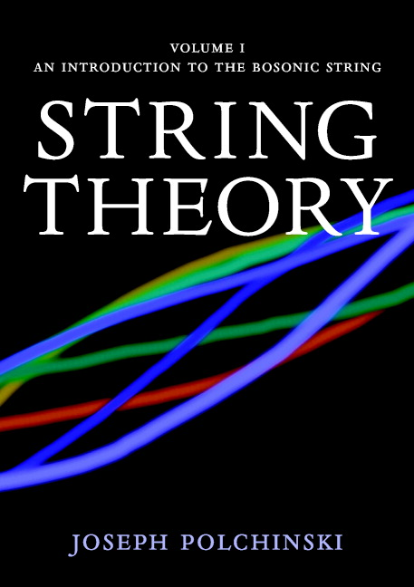

📖《弦理论》是Joseph Polchinski的代表作，系统讲解了弦理论的基本概念和数学框架。这套两卷本的著作涵盖了弦理论的基础知识、共形场论、超弦理论等核心内容。
这本书在我书架上已经躺了20年，每次翻开都像面对一座难以攀登的高山。弦理论的数学门槛极高，需要扎实的量子场论、广义相对论、微分几何基础。Polchinski是弦理论领域的大师，他的书是该领域的标准教材，但"标准"并不意味着"容易"——我真的想看懂，我尽力了。
这20年来，我断断续续地尝试理解其中的内容，有时能读懂几页，有时又被复杂的公式卡住。也许这辈子都无法真正掌握这本书的全部内容，但光是这种"仰望星空"的感觉，就足以让人对物理学的深邃保持敬畏。有些书，光是拥有就是一种态度的宣示。